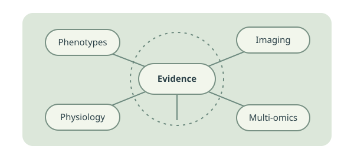
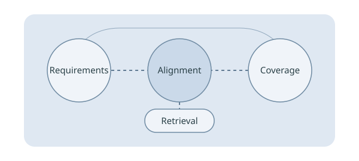
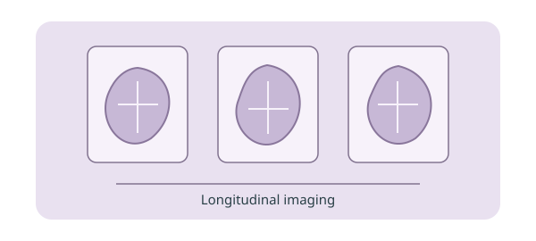
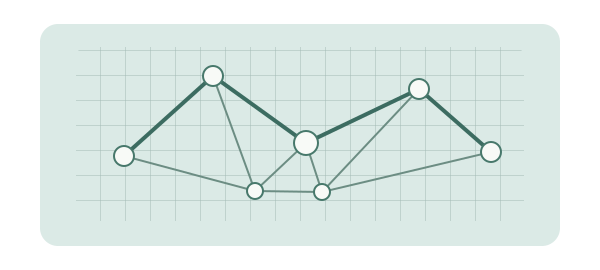

Education
BSc in Data Science and Big Data Technology
Xi’an Jiaotong-Liverpool University
Xi’an Jiaotong-Liverpool University
Data Science Undergraduate & Research Assistant
I study how intelligent systems use evidence, from fact-checking with large language models to reasoning across biomedical data.
I’m a data science undergraduate at Xi’an Jiaotong-Liverpool University. My research experience spans automated fact-checking, causal analysis and biomedical data, with a focus on how evidence supports a conclusion.
Education
Xi’an Jiaotong-Liverpool University
Evidence, reasoning and multimodal data.

Causal discovery
A Foundation for Self-Evolving Causal Biomedical Discovery
Integrating biomedical evidence across modalities to ask and evaluate causal questions.
Contributed to multimodal evidence integration, helped formulate research questions from evidence gaps, and performed causal analyses and empirical validation to support interpretable biomedical discovery.

Fact-checking
Optimizing an Automated Fact-Checking Framework via Evidence-Gap Analysis
Studying where automated fact-checking lacks evidence and how retrieval can respond.
Worked on evidence requirements, alignment and coverage in the FIRE framework, and explored dynamic evidence retrieval. Ran controlled experiments and error attribution analyses on entity ambiguity, insufficient evidence and final judgment bias.

Medical imaging
Longitudinal deep phenotyping
Supporting longitudinal phenotyping through medical imaging and multimodal biomedical data.
Contributed to standardized data governance and quality control, and supported cross-disease mechanistic research and external validation.
Co-author
Explored prompt engineering, retrieval-augmented generation, temporal modeling and topic adaptation across multimodal social media data. Worked on evaluation for rumor detection, sentiment analysis and trending-event tracking.

Implemented and validated models in Python and MATLAB for operations research and network science tasks. Applied optimization, graph algorithms and simulation.
I welcome academic conversations about evidence-based reasoning, causal discovery and multimodal learning.